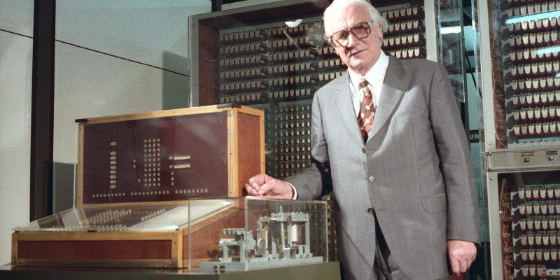

Al contrario de lo que se cree, la informática es anterior a la invención de las computadoras. Posee muy antiguos antecedentes en las máquinas de cálculo mentales de los filósofos de la Antigüedad Griega, como Euclides (c. 325-265 a. C.) y su famoso algoritmo, o bien en las calculadoras mecánicas del siglo XVII y las máquinas programables del siglo XIX.
Sin embargo, en la primera mitad del siglo XX se creó la tecnología necesaria para desarrollar las primeras computadoras. Entre esos avances se encuentra el tubo al vacío, las puertas lógicas y los primeros circuitos, lo cual inauguró un campo del saber que muy pronto revolucionó a todos los demás y cambió la forma en que pensamos el trabajo.
También fue central el trabajo en algoritmos durante las primeras tres décadas del siglo, bajo el genio de figuras como el matemático británico Alan Turing (1912-1954). Por otro lado, el contexto de la Segunda Guerra Mundial impulsó a los primeros calculadores automáticos que se dispusieron para descifrar los códigos de guerra del enemigo.
La primera máquina de cálculo totalmente programable y automática fue inventada en 1941, llamada Z3, y en 1944 la primera máquina electromecánica, en la Universidad de Harvard en Estados Unidos: la Mark I.
Desde entonces, los sistemas informáticos no cesaron de cambiar. Se incorporaron nuevas tecnologías como los transistores, los semiconductores y diversos mecanismos de almacenamiento de información, desde las tarjetas perforadas hasta las primeras cintas magnéticas.
El primer computador de la historia fue el ENIAC (1946), de la Universidad de Pensilvania, que ocupaba un cuarto completo. Fue el primero de varias generaciones de sistemas informáticos por venir, cada vez más pequeños y potentes.
Las primeras escuelas de computación, en el marco de las universidades, surgieron entre las décadas de 1950 y 1960. Paralelamente la industria informática, naciente pero poderosa, que permeó todas las demás áreas del saber humano en apenas 60 años de desarrollo.